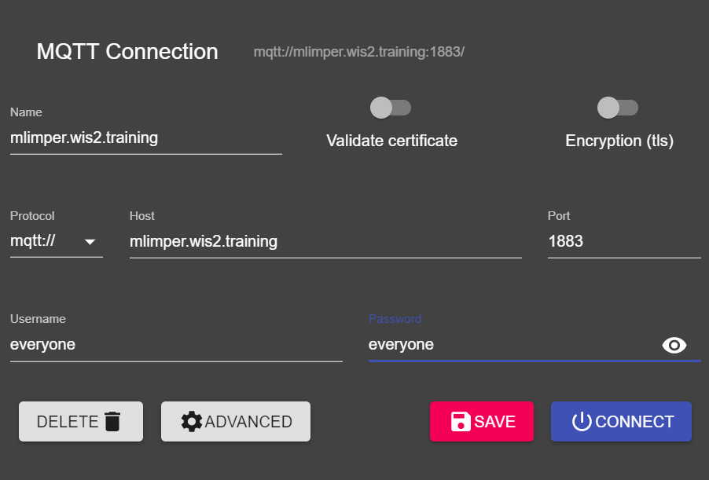
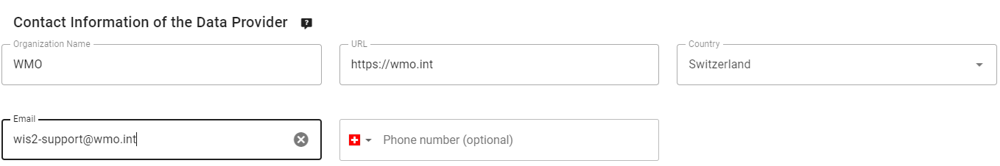

تكوين مجموعات البيانات في wis2box
نتائج التعلم
بنهاية هذه الجلسة العملية، ستكون قادرًا على:
- إنشاء مجموعة بيانات جديدة
- إنشاء بيانات استكشافية لمجموعة بيانات
- تكوين تعيينات البيانات لمجموعة بيانات
- نشر إشعار WIS2 مع سجل WCMP2
- تحديث مجموعة البيانات الخاصة بك وإعادة نشرها
مقدمة
يستخدم wis2box مجموعات بيانات مرتبطة ببيانات استكشافية وتعيينات بيانات.
تُستخدم البيانات الاستكشافية لإنشاء سجل WCMP2 (ملف تعريف البيانات الأساسية للمنظمة العالمية للأرصاد الجوية 2) الذي يتم مشاركته باستخدام إشعار WIS2 الذي يتم نشره على وسيط wis2box الخاص بك.
تُستخدم تعيينات البيانات لربط مكون إضافي للبيانات ببياناتك الواردة، مما يسمح بتحويل بياناتك قبل نشرها باستخدام إشعار WIS2.
ستوجهك هذه الجلسة خلال إنشاء مجموعة بيانات جديدة، وإنشاء بيانات استكشافية، وتكوين تعيينات البيانات. ستفحص مجموعة البيانات الخاصة بك في واجهة برمجة تطبيقات wis2box وتراجع إشعار WIS2 لبياناتك الاستكشافية.
التحضير
قم بالاتصال بوسيطك باستخدام MQTT Explorer.
بدلاً من استخدام بيانات اعتماد الوسيط الداخلي الخاص بك، استخدم بيانات الاعتماد العامة everyone/everyone:

Note
لا تحتاج أبدًا إلى مشاركة بيانات اعتماد الوسيط الداخلي الخاص بك مع المستخدمين الخارجيين. المستخدم 'everyone' هو مستخدم عام لتمكين مشاركة إشعارات WIS2.
تمتلك بيانات الاعتماد everyone/everyone حق الوصول للقراءة فقط على الموضوع 'origin/a/wis2/#'. هذا هو الموضوع الذي يتم نشر إشعارات WIS2 عليه. يمكن للوسيط العالمي الاشتراك بهذه البيانات العامة لتلقي الإشعارات.
لن يتمكن المستخدم 'everyone' من رؤية المواضيع الداخلية أو نشر الرسائل.
افتح متصفحًا وافتح صفحة إلى http://<your-host>/wis2box-webapp. تأكد من أنك قد سجلت الدخول ويمكنك الوصول إلى صفحة 'محرر مجموعة البيانات'.
راجع القسم حول تهيئة wis2box إذا كنت بحاجة إلى تذكر كيفية الاتصال بالوسيط أو الوصول إلى تطبيق wis2box الويب.
إنشاء رمز تفويض للعمليات/wis2box
ستحتاج إلى رمز تفويض لنقطة النهاية 'processes/wis2box' لنشر مجموعة البيانات الخاصة بك.
لإنشاء رمز تفويض، قم بالوصول إلى جهاز الـ VM التدريبي الخاص بك عبر SSH واستخدم الأوامر التالية لتسجيل الدخول إلى حاوية إدارة wis2box:
cd ~/wis2box-1.0.0rc1
python3 wis2box-ctl.py login
ثم قم بتشغيل الأمر التالي لإنشاء رمز تفويض عشوائي لنقطة النهاية 'processes/wis2box':
wis2box auth add-token --path processes/wis2box
يمكنك أيضًا إنشاء رمز بقيمة محددة من خلال توفير الرمز كوسيط للأمر:
wis2box auth add-token --path processes/wis2box MyS3cretToken
تأكد من نسخ قيمة الرمز وتخزينها على جهازك المحلي، حيث ستحتاج إليها لاحقًا.
بمجرد حصولك على الرمز، يمكنك الخروج من حاوية إدارة wis2box:
exit
إنشاء مجموعة بيانات جديدة في تطبيق wis2box الويب
انتقل إلى صفحة 'محرر مجموعة البيانات' في تطبيق wis2box الويب الخاص بمثيل wis2box من خلال الانتقال إلى http://<your-host>/wis2box-webapp واختيار 'محرر مجموعة البيانات' من القائمة على الجانب الأيسر.
في صفحة 'محرر مجموعة البيانات'، تحت علامة التبويب 'مجموعات البيانات'، انقر على "إنشاء جديد ...":

ستظهر نافذة منبثقة، تطلب منك تقديم:
- معرف المركز: هذا هو الاختصار الوكالة (بأحرف صغيرة وبدون مسافات)، كما حددته الدولة العضو في المنظمة العالمية للأرصاد الجوية، الذي يحدد مركز البيانات المسؤول عن نشر البيانات.
- نوع البيانات: نوع البيانات التي تقوم بإنشاء البيانات الاستكشافية لها. يمكنك الاختيار بين استخدام قالب محدد مسبقًا أو تحديد 'أخرى'. إذا تم تحديد 'أخرى'، سيتعين ملء المزيد من الحقول يدويًا.
معرف المركز
يجب أن يبدأ معرف المركز الخاص بك بنطاق أعلى لبلدك، يليه شرطة (-) واسم مختصر لمنظمتك (على سبيل المثال fr-meteofrance). يجب أن يكون معرف المركز بأحرف صغيرة ويستخدم الأحرف الأبجدية الرقمية فقط. تعرض القائمة المنسدلة جميع معرفات المراكز المسجلة حاليًا على WIS2 بالإضافة إلى أي معرف مركز قمت بإنشائه بالفعل في wis2box.
قوالب نوع البيانات
يسمح لك حقل نوع البيانات باختيار من قائمة القوالب المتوفرة في محرر مجموعات البيانات wis2box. سيقوم القالب بملء النموذج مسبقًا بالقيم الافتراضية المقترحة المناسبة لنوع البيانات. يتضمن ذلك العنوان المقترح والكلمات الرئيسية للبيانات الاستكشافية ومكونات البيانات المعدة مسبقًا. سيتم تثبيت الموضوع على الموضوع الافتراضي لنوع البيانات.
لغرض التدريب، سنستخدم نوع البيانات weather/surface-based-observations/synop الذي يتضمن مكونات بيانات تضمن تحويل البيانات إلى تنسيق BUFR قبل نشرها.
إذا كنت ترغب في نشر تنبيهات CAP باستخدام wis2box، استخدم القالب weather/advisories-warnings. يتضمن هذا القالب مكون بيانات يتحقق من أن البيانات الواردة هي تنبيه CAP صالح قبل النشر. لإنشاء تنبيهات CAP ونشرها عبر wis2box، يمكنك استخدام CAP Composer.
يرجى اختيار معرف مركز مناسب لمنظمتك.
لـ نوع البيانات، حدد weather/surface-based-observations/synop:

انقر متابعة إلى النموذج للمتابعة، سيتم الآن تقديم نموذج محرر مجموعة البيانات.
بما أنك حددت نوع البيانات weather/surface-based-observations/synop، سيتم ملء النموذج مسبقًا ببعض القيم الأولية المتعلقة بهذا النوع من البيانات.
إنشاء بيانات استكشافية
يسمح لك نموذج محرر مجموعة البيانات بتقديم البيانات الاستكشافية لمجموعة البيانات الخاصة بك التي ستستخدمها حاوية إدارة wis2box لنشر سجل WCMP2.
بما أنك حددت نوع البيانات 'weather/surface-based-observations/synop'، سيتم ملء النموذج مسبقًا ببعض القيم الافتراضية.
يرجى التأكد من استبدال 'المعرف المحلي' الذي تم إنشاؤه تلقائيًا بالاسم الوصفي لمجموعة البيانات الخاصة بك، على سبيل المثال 'synop-dataset-wis2training':

راجع العنوان والكلمات الرئيسية، وقم بتحديثها حسب الضرورة، وقدم وصفًا لمجموعة البيانات الخاصة بك.
لاحظ أن هناك خيارات لتغيير 'سياسة بيانات WMO' من 'الأساسية' إلى 'الموصى بها' أو لتعديل معرف البيانات الاستكشافية الافتراضي الخاص بك، يرجى الاحتفاظ بسياسة البيانات كـ 'الأساسية' واستخدام معرف البيانات الاستكشافية الافتراضي.
بعد ذلك، راجع القسم الذي يحدد 'الخصائص الزمنية' و'الخصائص المكانية' الخاصة بك. يمكنك ضبط المربع الحدودي عن طريق تحديث حقول 'خط العرض الشمالي'، 'خط العرض الجنوبي'، 'خط الطول الشرقي'، و'خط الطول الغربي':

بعد ذلك، املأ القسم الذي يحدد 'معلومات الاتصال لمزود البيانات':

أخيرًا، املأ القسم الذي يحدد 'معلومات جودة البيانات':
بمجرد الانتهاء من ملء جميع الأقسام، انقر على 'VALIDATE FORM' وتحقق من النموذج بحثًا عن أي أخطاء:

إذا كانت هناك أي أخطاء، قم بتصحيحها وانقر على 'VALIDATE FORM' مرة أخرى.
تأكد من عدم وجود أخطاء وأنك تحصل على إشعار منبثق يشير إلى أن نموذجك قد تم التحقق منه:
<img